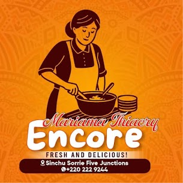
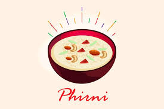

Lait caillé traditionnel
Une texture onctueuse et fraîche, préparée chaque jour dans notre atelier familial.
Produits laitiers artisanaux en Gambie
Le meilleur du thiacry et du lait caillé fait maison par des mains d’or de Mariama. À votre service !

Mariama Thiacry est une entreprise familiale dédiée aux produits laitiers traditionnels, préparés chaque jour avec soin.
Notre passion : offrir des recettes authentiques, un goût naturel et une qualité artisanale qui rappelle les traditions gambiennes.
Une sélection maison préparée avec soin, dans le respect des saveurs traditionnelles et de la qualité artisanale.
Une texture onctueuse et fraîche, préparée chaque jour dans notre atelier familial.

Le goût authentique du thiacry, équilibré entre semoule fine et lait de qualité.

De petites gourmandises artisanales pour accompagner vos événements et réceptions.
Nous préparons des produits laitiers artisanaux pour tous vos moments importants, avec une approche simple, chaleureuse et personnalisée.
Des préparations soignées pour rendre vos célébrations encore plus mémorables.
Un service familial et authentique, adapté à vos traditions et à vos envies.
Pour vos rencontres, fêtes et rassemblements, avec une touche artisanale unique.
Des commandes adaptées à vos besoins, préparées avec attention et qualité.
Entreprise : Mariama Thiacry
Type : Produits laitiers artisanaux
Adresse : Sinchu Sorry, Serrekunda, Gambie
Téléphone : +220 222 9244
Horaires : Tous les jours de 09:00 à 19:00
Commander / Appeler